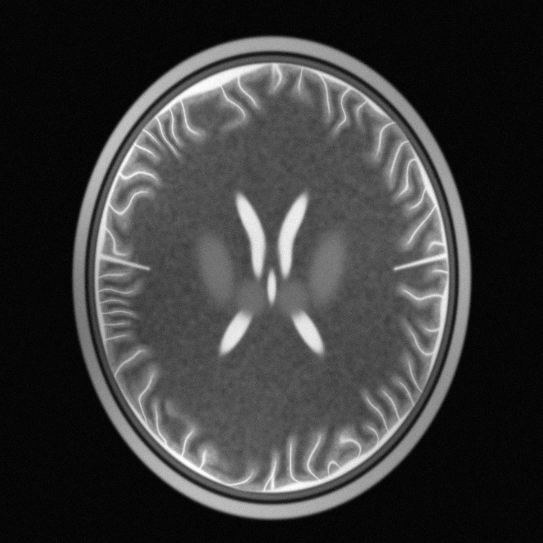
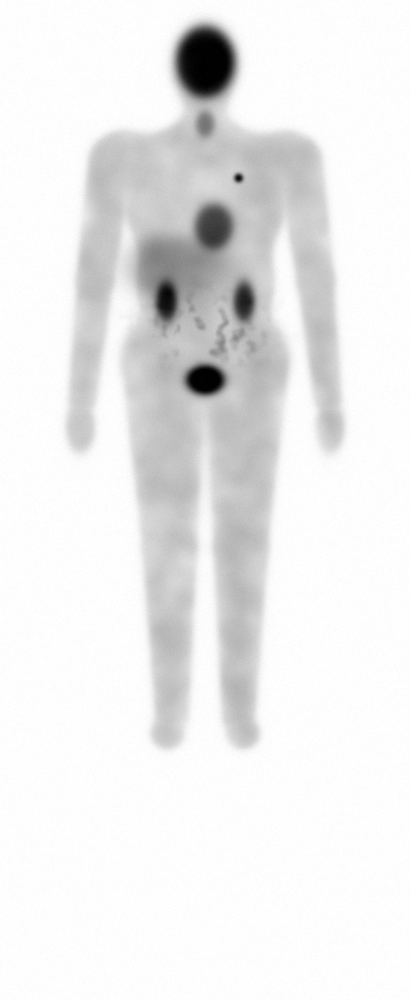
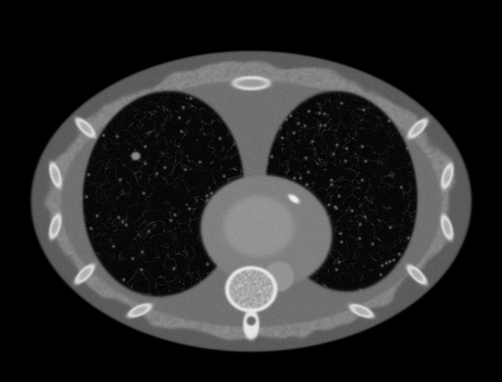

Why LUMEN
일반 건강검진은 혈액과 초음파로 몸의 일부만 봅니다. 많은 암과 혈관 질환은 증상이 나타났을 때 이미 늦습니다. LUMEN은 영상의학 장비로 몸 속을 직접, 처음부터 끝까지 확인하는 예방 검진입니다.
Inside the scan
장비마다 잘 보는 곳이 다릅니다. MRI는 연부조직, CT는 폐와 혈관, PET-CT는 대사가 활발한 종양을 가장 잘 찾아냅니다.




* 이해를 돕기 위해 제작한 합성 예시 이미지이며 실제 환자 영상이 아닙니다.
Scans
나이, 가족력, 흡연력에 맞게 필요한 검사만 골라 예약할 수 있습니다. 어떤 조합이 맞을지 모르겠다면 예약 후 코디네이터가 함께 결정해 드립니다.
Your report
장기별 결과를 한눈에. 전문 용어 대신 이해할 수 있는 설명과 함께, 추적 관찰이 필요한 소견은 다음 검사 시점까지 알려 드립니다.

Packages
가장 많이 선택하는 조합을 할인된 가격으로. 모든 패키지에 전문의 판독과 결과 상담이 포함됩니다.
* 비급여 예상 금액이며, 병원·조영제 사용 여부에 따라 달라질 수 있습니다. 개별 검사로 직접 조합하기 →
How it works
복잡한 병원 절차 없이, 온라인에서 모든 과정을 안내받으세요.
패키지 또는 개별 검사를 고르고 가까운 제휴 병원과 시간을 선택합니다.
체내 금속, 조영제 알레르기 등 안전 문진을 확인하고 코디네이터가 준비사항을 안내합니다.
검사복으로 갈아입고 음악을 들으며 편하게 누워 있으면 됩니다. 전신 MRI는 약 60분.
전문의 판독 리포트를 받고 1:1 상담으로 이해하기 쉽게 설명을 듣습니다.